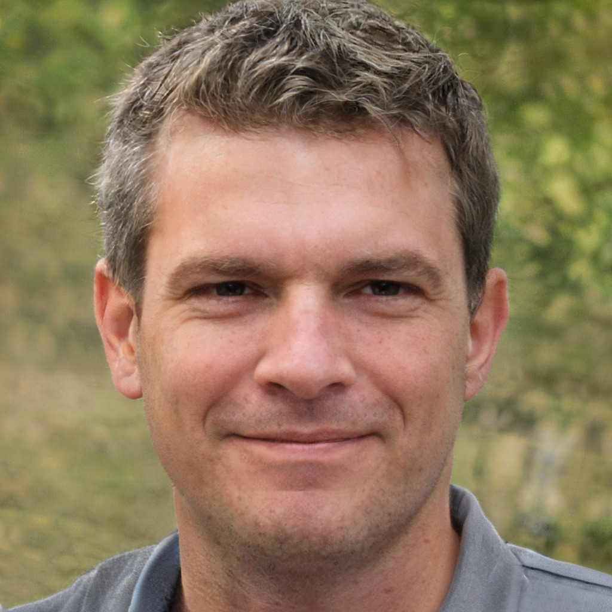

Claire Jack
- Position: Centre Manager
- AResponsible for: The overall running of the centre and all of its activities
- Favourite Activity: Pole climb

Lochquarry Outdoor Centre is set in acres of land in the heart of the majestic Argyll hills. On our doorstep is not only magnificent scenery, but also a breath-taking selection of outdoor and adventurous activities. With activities designed to meet the needs of all ages and experiences of young people, Lochquarry truly brings adventure to everyone.
Each activity is run under the instruction of one of our highly trained staff and all safety equipment is provided. Let’s meet some of the Lochquarry staff:
